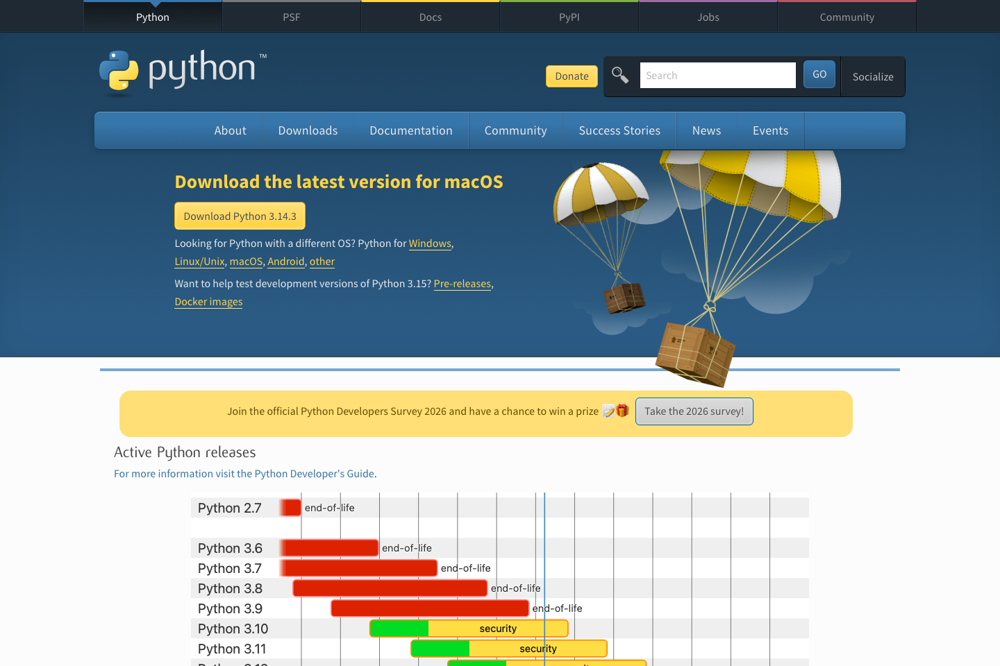

설치 순서
- Python 공식 다운로드 페이지 열기
- 최신 안정 버전 Download 버튼 클릭
- 설치 파일 실행
- 간단 설치 또는 Customize installation 선택
- 설치 후 새 터미널 열기

Tool Guide
Python 설치 필수. 자동화, 스크립트, 확장 실습용 기본 도구. Windows 기준은 python.org 공식 설치
설치 순서

PATH 안내
공식 문서 기준으로 optional. 하지만 python 명령을 바로 쓰려면 켜두는 편이
덜 헷갈림.
설치할 때 보기
수업에서는 python, python3, py 명령 중 하나를 바로 실행.
PATH 옵션 켜두면 이해가 쉬움.
설치 후 확인
python --version
python3 --version
py --versionWindows에서는 py 가 먼저 동작하는 경우도 있음.
설치 확인
python --version또는
python3 --version추가 확인
py --versionWindows에서는 Python launcher와 함께 py 명령 사용 가능.
공식 문서 메모
자주 막히는 경우
python 이 안 되면 py 또는 python3 로 확인공식 링크